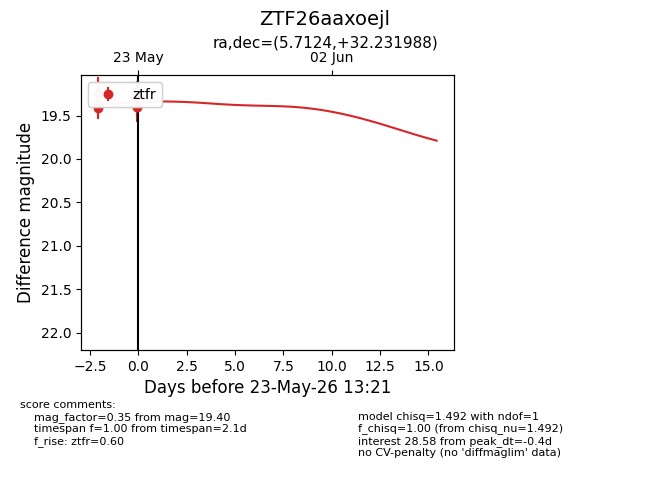
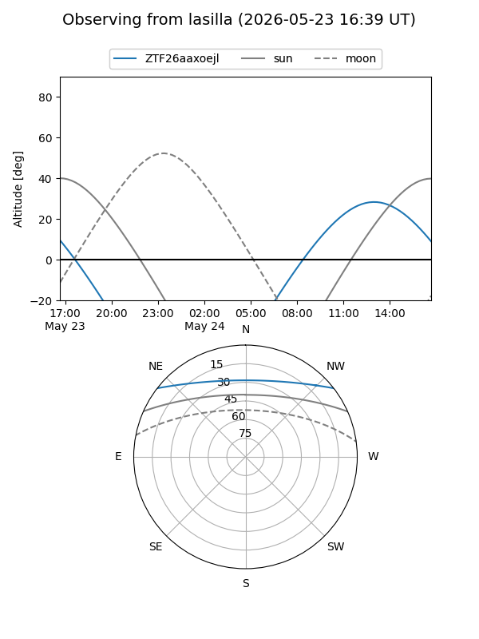
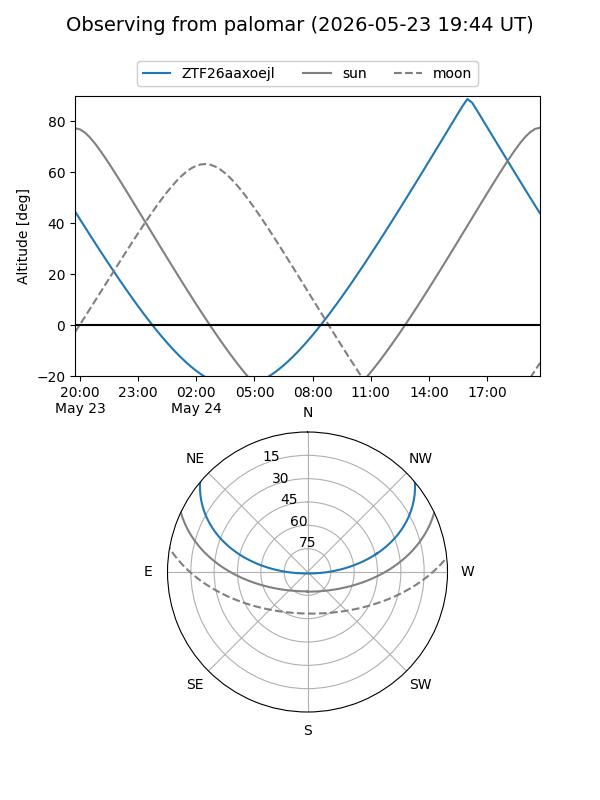
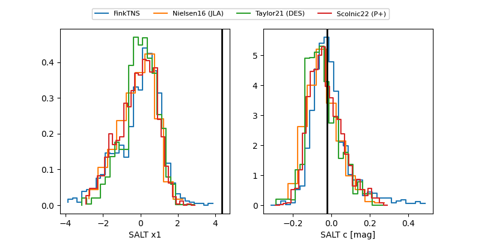

ZTF26aaxoejl
Target ZTF26aaxoejl at 2026-05-23 13:23
Aliases and brokers:
lsst-FINK: link
lsst-Lasair: link
lsst-ALeRCE: link
ztf-FINK: link
ztf-Lasair: link
ztf-ALeRCE: link
alt names
ZTF26aaxoejl (ztf,fink_ztf)
Coordinates:
equatorial (ra, dec) = 5.7124,+32.23199
equatorial (HMS+DMS) = 00:22:50.99,+32:13:55.16
galactic (l, b) = (115.9340,-30.25101)
Flags:
Photometry:
last ztfr=19.40
6 ztfr detections
Lightcurve

Visibility


Additional plots
